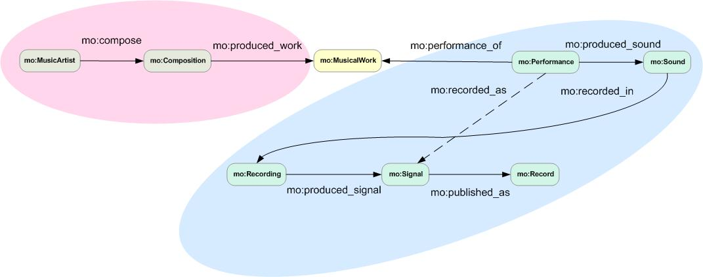

The Music Ontology provides a model for publishing structured music-related data on your web site or through your API. If you're unsure about why you should publish music-related data in this way, please read our FAQ. Below are a few typical examples of using the Music Ontology, in three different syntaxes: RDFa in HTML for embedding music-related data on a web page, and JSON-LD and Turtle for exposing music-related data as part of an API.
Learn how to start publishing music-related data in your web pages, using the Music Ontology.
Learn how to start exposing music-related data as part of your API using JSON-LD.
Learn how to start exposing music-related Linked Data as RDF/Turtle.
Before publishing Music Ontology data, you need to think about the resources (e.g. tracks, artists, musical works) you want to describe and what URIs they should have. Linked Data revolves around identifying resources with "cool URIs" so that other people can link to them and publish information about them. URIs should be as persistent and unambiguous as possible (i.e. identifying only one thing) so that other people link to the right one.
One of the easiest way of managing URIs is to use fragment identifiers, or "hash URIs". We use hash URIs in the examples below.
There are also large sets of URIs available for the music domain, such as those provided by Musicbrainz. It is often easier to reuse those URIs rather than creating new ones. Reusing URIs means that your data is linked with other music-related data, making it part of a richer and more descriptive web of data.
In order to start using the Music Ontology, you will need to add a few namespaces to your document:
In HTML:
<html prefix="mo: http://purl.org/ontology/mo/
dc: http://purl.org/dc/elements/1.1/
xsd: http://www.w3.org/2001/XMLSchema#
tl: http://purl.org/NET/c4dm/timeline.owl#
event: http://purl.org/NET/c4dm/event.owl#
foaf: http://xmlns.com/foaf/0.1/
rdfs: http://www.w3.org/2000/01/rdf-schema#">
...
<html>
In JSON-LD:
{
"@context": {
"mo": "http://purl.org/ontology/mo/",
"dc": "http://purl.org/dc/elements/1.1/",
"xsd": "http://www.w3.org/2001/XMLSchema#",
"tl": "http://purl.org/NET/c4dm/timeline.owl#",
"event": "http://purl.org/NET/c4dm/event.owl#",
"foaf": "http://xmlns.com/foaf/0.1/",
"rdfs": "http://www.w3.org/2000/01/rdf-schema#"
},
...
}
In RDF/Turtle:
@prefix mo: <http://purl.org/ontology/mo/> .
@prefix dc: <http://purl.org/dc/elements/1.1/> .
@prefix xsd: <http://www.w3.org/2001/XMLSchema#> .
@prefix tl: <http://purl.org/NET/c4dm/timeline.owl#> .
@prefix event: <http://purl.org/NET/c4dm/event.owl#> .
@prefix foaf: <http://xmlns.com/foaf/0.1/> .
@prefix rdfs: <http://www.w3.org/2000/01/rdf-schema#> .
...
The resulting document should validate against HTML+RDFa or XHTML+RDFa. These multiple prefixes are needed because the Music Ontology doesn't redefine terms that are defined in other vocabularies. For example the Music Ontology is very commonly used alongside FOAF, a vocabulary for describing people and including terms such as 'name', 'homepage', 'member', etc. RDF is designed to mix and match terms from multiple vocabularies, and the Music Ontology makes heavy use of that.
The following example shows how to describe a track and the band who made it, linking the band to its MusicBrainz URI. It uses the Music Ontology alongside FOAF and Dublin Core.
In HTML:
<span typeof="mo:Track" about="#track-1">
<span property="dc:title">Turnover</span>
is a track by
<a rel="foaf:maker" typeof="mo:MusicGroup"
href="http://musicbrainz.org/artist/233fc3f3-6de2-465c-985e-e721dbabbace#_">
<span property="foaf:name">Fugazi</span>
</a>
</span>
In JSON-LD:
{
"@id": "http://example.org/#track1",
"@type": "mo:Track",
"dc:title": "Turnover",
"foaf:maker": {
"@id": "http://musicbrainz.org/artist/233fc3f3-6de2-465c-985e-e721dbabbace#_",
"@type": "mo:MusicGroup",
"foaf:name": "Fugazi"
}
}
In RDF/Turtle
<#track-1>
a mo:Track ;
dc:title "Turnover" ;
foaf:maker <http://musicbrainz.org/artist/233fc3f3-6de2-465c-985e-e721dbabbace#_> .
<http://musicbrainz.org/artist/233fc3f3-6de2-465c-985e-e721dbabbace>
a mo:MusicGroup ;
foaf:name "Fugazi" .
The following example shows how to describe a band and its members.
In HTML:
<span typeof="mo:MusicGroup" about="#band-1">
<span property="foaf:name">Fugazi</span>
started in <span property="mo:activity_start" content="1987-01-01T00:00:00Z">1987</span>
and has the following members:
<ul rel="foaf:member">
<li about="#imk" typeof="mo:MusicArtist"><span property="foaf:name">Ian MacKaye</span></li>
<li about="#jl" typeof="mo:MusicArtist"><span property="foaf:name">Joe Lally</span></li>
<li about="#gp" typeof="mo:MusicArtist"><span property="foaf:name">Guy Picciotto</span></li>
<li about="#bc" typeof="mo:MusicArtist"><span property="foaf:name">Brendan Canty</span></li>
</ul>
</span>
In JSON-LD:
{
"@id": "http://example.org/#band-1",
"@type": "mo:MusicGroup",
"foaf:name": "Fugazi",
"mo:activity_start": "1987-01-01T00:00:00Z",
"foaf:member": [{
"@id": "http://example.org/#imk",
"@type": "mo:MusicArtist",
"foaf:name": "Fugazi"
},{
"@id": "http://example.org/#jl",
"@type": "mo:MusicArtist",
"foaf:name": "Joe Lally"
},{
"@id": "http://example.org/#gp",
"@type": "mo:MusicArtist",
"foaf:name": "Guy Picciotto"
},{
"@id": "http://example.org/#bc",
"@type": "mo:MusicArtist",
"foaf:name": "Brendan Canty"
}]
}
In RDF/Turtle:
<#band-1>
a mo:MusicGroup;
foaf:name "Fugazi";
foaf:member <#imk>;
foaf:member <#jl>;
foaf:member <#gp>;
foaf:member <#bc> .
<#imk>
a mo:MusicArtist;
foaf:name "Ian MacKaye" .
<#jl>
a mo:MusicArtist;
foaf:name "Joe Lally" .
<#gp>
a mo:MusicArtist;
foaf:name "Guy Picciotto" .
<#bc>
a mo:MusicArtist;
foaf:name "Brendan Canty" .
The following example shows how to associate the band members with a period of time and an instrument.
In HTML:
<span prefix="ical: http://www.w3.org/2002/12/cal/ical#" typeof="mo:MusicGroup" about="#band-1">
<span property="foaf:name">Fugazi</span>
has the following members:
<ul rel="mo:membership">
<li typeof="mo:Membership">
<span rel="mo:artist"><span about="#bc" typeof="mo:MusicArtist" property="foaf:name">Brendan Canty</span></span> played
<a rel="mo:primary_instrument" typeof="mo:Instrument" href="http://dbpedia.org/resource/Drum_kit">drums</a>
from <span property="tl:start" datatype="xsd:gYear">1987</span>
</li>
</ul>
</span>
In JSON-LD:
{
"@id": "http://example.org/#band-1",
"@type": "mo:MusicGroup",
"foaf:name": "Fugazi",
"mo:membership": [{
"@type": "mo:MusicMembership",
"tl:start": {
"@value": "1987",
"@type": "xsd:gYear"
},
"mo:artist": {
"@type": "mo:MusicArtist",
"foaf:name": "Brendan Canty"
},
"mo:primary_instrument": {
"@type": "mo:Instrument",
"@id": "http://dbpedia.org/resource/Drum_kit"
}
}]
}
In RDF/Turtle:
<#band-1>
a mo:MusicGroup;
foaf:name "Fugazi";
mo:membership [
a mo:Membership;
mo:artist <#bc>;
mo:primary_instrument <http://dbpedia.org/resource/Drum_kit>;
tl:start "1987"^^xsd:gYear .
<#bc>
a mo:MusicArtist;
foaf:name "Brendan Canty" .
<http://dbpedia.org/resource/Drum_kit>
a mo:Instrument .
The following example shows how to describe a musical performance, including a track that was played during this performance.
In HTML:
<span typeof="mo:Performance" about="http://etree.linkedmusic.org/performance/Mogwai1996-05-18">
<span property="rdfs:label">A performance by
<a rel="mo:performer" href="http://musicbrainz.org/artist/d700b3f5-45af-4d02-95ed-57d301bda93e#_">
<span property="foaf:name">Mogwai</span>
</a>
</span>
at the
<a rel="event:place" href="http://etree.linkedmusic.org/venue/Mogwai1996-05-18">
<span property="rdfs:label">Kings Cross Water Rats, London</span>
</a>
on the
<span property="dc:date" datatype="xsd:date" content="1996-05-18">18th of May, 1996</span>
included their "
<a rel="event:sub_event" href="http://etree.linkedmusic.org/track/Mogwai1996-05-18-1">
<span property="rdfs:label">Summer</span>
</a>" track.
</span>
In JSON-LD:
{
"@id": "http://etree.linkedmusic.org/performance/Mogwai1996-05-18",
"@type": "mo:Performance",
"rdfs:label": "A performance by Mogwai",
"mo:performer": {
"@id": "http://musicbrainz.org/artist/d700b3f5-45af-4d02-95ed-57d301bda93e#_",
"foaf:name": "Mogwai"
},
"dc:date": {
"@value": "1996-05-18",
"@type": "xsd:date"
},
"event:place": {
"@id": "http://etree.linkedmusic.org/venue/Mogwai1996-05-18",
"rdfs:label": "Kings Cross Water Rats, London"
},
"event:sub_event": {
"@id": "http://etree.linkedmusic.org/track/Mogwai1996-05-18-1",
"rdfs:label": "Summer"
}
}
In RDF/Turtle:
<http://etree.linkedmusic.org/performance/Mogwai1996-05-18>
a <http://purl.org/ontology/mo/Performance>;
rdfs:label "A performance by Mogwai";
mo:performer <http://musicbrainz.org/artist/d700b3f5-45af-4d02-95ed-57d301bda93e#_>;
event:place <http://etree.linkedmusic.org/venue/Mogwai1996-05-18>;
dc:date "1996-05-18"^^xsd:date;
event:sub_event <http://etree.linkedmusic.org/track/Mogwai1996-05-18-1> .
<http://musicbrainz.org/artist/422aecc0-4aac-012f-19e9-00254bd44c28#_>
foaf:name "Mogwai" .
<http://etree.linkedmusic.org/track/Mogwai1996-05-18-1>
rdfs:label "Summer" .
The Music Ontology model for music production is based on a chain of events, from the composition of a musical work to a recording of one of its performances. This enables the ontology to be very descriptive and easily extensible. Below is an illustration of a typical workflow.

The following example describes Bach's "The Art of Fugue" and one of its performances.
In HTML:
<span typeof="mo:MusicArtist" about="http://dbpedia.org/resource/Johann_Sebastian_Bach">
<span property="foaf:name">Johann Sebastian Bach</span>
was involved in the
<span rev="mo:composer">
<span typeof="mo:Composition" about="#composition">
<span property="rdfs:label">
Composition of
<span rel="mo:produced_work">
<span typeof="mo:MusicalWork" about="#kunst-der-fuge">
<span property="dc:title">The Art of Fugue, BWV 1080: Contrapunctus IX, a 4, alla Duodecima</span>
</span>
</span>
</span>
which happened between
<span rel="event:time">
<span property="tl:start" datatype="xsd:gYear">1742</span>
and
<span property="tl:end" datatype="xsd:gYear">1749</span>
</span>.
</span>
</span>
</span>
<span typeof="mo:Performance" about="#performance">
<span rel="mo:performance_of" resource="#kunst-der-fuge">This work</span>
was performed and
<a rel="mo:recorded_as" href="http://musicbrainz.org/recording/93da082b-99c1-4469-9eb6-91e9fbeaeb2a#_">
recorded
</a>
by the
<a rel="mo:performer" href="http://musicbrainz.org/artist/fd20e8ed-0736-44db-8d97-530fbf00e813#_">
Emerson String Quartet
</a>
in
<span rel="event:time"><span property="tl:at" datatype="xsd:gYear">2003</span></span>, with
a <span rel="mo:instrument" typeof="mo:Instrument"><span property="rdfs:label">first violin</span></span>,
a <span rel="mo:instrument" typeof="mo:Instrument"><span property="rdfs:label">second violin</span></span>,
a <span rel="mo:instrument" typeof="mo:Instrument"><span property="rdfs:label">viola</span></span>
and a <span rel="mo:instrument" typeof="mo:Instrument"><span property="rdfs:label">cello</span></span>.
</span>
In JSON-LD:
{
"@id": "http://example.org/#composition",
"@type": "mo:Composition",
"rdfs:label": "Composition of The Art of Fugue, BWV 1080: Contrapunctus IX, a 4, alla Duodecima",
"event:time": {
"tl:start": {
"@value": "1742",
"@type": "xsd:gYear"
},
"tl:end": {
"@value": "1749",
"@type": "xsd:gYear"
}
},
"mo:composer": {
"@id": "http://dbpedia.org/resource/Johann_Sebastian_Bach",
"@type": "mo:Composer",
"foaf:name": "Johann Sebastian Bach"
},
"mo:produced_work": {
"@id": "http://example.org/#kunst-der-fuge",
"@type": "mo:MusicalWork",
"dc:title": "The Art of Fugue, BWV 1080: Contrapunctus IX, a 4, alla Duodecima",
"@reverse": {
"mo:performance_of": {
"@id": "http://example.org/#performance",
"@type": "mo:Performance",
"event:time": {
"tl:at": {
"@value": "2003",
"@type": "xsd:gYear"
}
},
"mo:performer": "http://musicbrainz.org/artist/fd20e8ed-0736-44db-8d97-530fbf00e813#_",
"mo:recorded_as": "http://musicbrainz.org/recording/93da082b-99c1-4469-9eb6-91e9fbeaeb2a#_",
"mo:instrument": [
{ "@type": "mo:Instrument", "rdfs:label": "first violin" },
{ "@type": "mo:Instrument", "rdfs:label": "second violin" },
{ "@type": "mo:Instrument", "rdfs:label": "viola" },
{ "@type": "mo:Instrument", "rdfs:label": "cello" }
]
}
}
}
}
In RDF/Turtle:
<http://dbpedia.org/resource/Johann_Sebastian_Bach>
a mo:MusicArtist ;
foaf:name "Johann Sebastian Bach" .
<#composition>
a mo:Composition ;
rdfs:label "Composition of The Art of Fugue, BWV 1080: Contrapunctus IX, a 4, alla Duodecima" ;
mo:composer <http://dbpedia.org/resource/Johann_Sebastian_Bach> ;
event:time [ tl:start "1742"^^xsd:gYear ; tl:end "1749"^^xsd:gYear ] ;
mo:produced_work <#kunst-der-fuge> .
<#kunst-der-fuge>
a mo:MusicalWork ;
dc:title "The Art of Fugue, BWV 1080: Contrapunctus IX, a 4, alla Duodecima" .
<#performance>
a mo:Performance ;
mo:performance_of <#kunst-der-fuge> ;
event:time [ tl:at "2003"^^xsd:gYear ] ;
mo:performer <http://musicbrainz.org/artist/fd20e8ed-0736-44db-8d97-530fbf00e813#_> ;
mo:instrument [ a mo:Instrument ; rdfs:label "first violin" ],
[ a mo:Instrument ; rdfs:label "second violin" ],
[ a mo:Instrument ; rdfs:label "viola" ],
[ a mo:Instrument ; rdfs:label "cello" ] ;
mo:recorded_as <http://musicbrainz.org/recording/93da082b-99c1-4469-9eb6-91e9fbeaeb2a#_> .